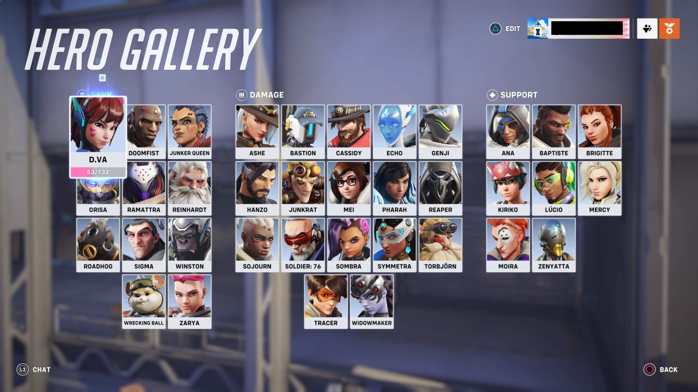

Imagenes
Imagen en resolucion original
Imagen con altura reducida
Imagen con ancho reducido
Imagen con aspecto modificado
Imagen con anchura automatica
Imagen con
Figura No.1 10mo Aniversario
Imagen como enlace
Click en el logo para ver el poster...
Mapa con imagen
Overwatch
